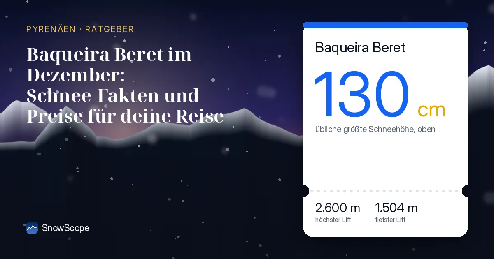

Baqueira Beret im Dezember: Schnee-Fakten und Preise für deine Reise
Baqueira Beret im Val d'Aran ist einer der großen Namen der Pyrenäen – aber ist es eine gute Wahl für Dezember? Unsere Schneehistorie zeigt hier einen bescheidenen Saisonstart, die Wahl der Woche zählt also mehr als sonst.
Die Live-Schneeprognose für Baqueira Beret in der SnowScope-AppSchneehöhen, Pulverschnee-Alarme und 3D-Karte, gratis.
Val d'Aran und seine Höhen
Baqueira Beret liegt in Spanien und bietet ein großes Gebiet zum Erkunden. Das Pistennetz umfasst 154 km Pisten und 36 Lifte.
Das Skigebiet erstreckt sich von der Talstation auf 1.504 m bis zum höchsten Punkt auf 2.600 m, was einen Höhenunterschied von 1.096 m ergibt.

Dezember-Schnee in Zahlen
Wenn wir auf unsere Schnee-Historie von 46 Wintern von 1980-81 bis 2025-26 zurückblicken, ist die Schneehöhe im Dezember an der Basis oft recht gering. Auf 1.504 m liegt die übliche Schneehöhe im Dezember bei 8 cm, am 15. Dezember bei 9 cm. Ein schneearmer Dezember bringt in etwa 1 von 10 Wintern 0 cm oder weniger, während ein schneereicher Dezember in etwa 1 von 10 Wintern 37 cm oder mehr erreichen kann.
Weiter oben auf mittlerer Höhe bei 2.052 m liegt die übliche Dezember-Schneehöhe bei 20 cm, am 15. Dezember bei 19 cm. An der Bergstation auf 2.600 m liegt die übliche Dezember-Schneehöhe bei 30 cm, am 15. Dezember ebenfalls bei 30 cm. Auf dieser Höhe erreicht ein schneereicher Dezember in etwa 1 von 10 Wintern 77 cm oder mehr.
Wenn man den Anteil der Winter mit 30 cm oder mehr auf mittlerer Höhe betrachtet, steigt dieser im Laufe des Monats an: 22 Prozent vom 1.-7. Dezember, 30 Prozent vom 8.-14. Dezember, 35 Prozent vom 15.-21. Dezember und 41 Prozent vom 22.-28. Dezember. Am Gipfel liegt der Anteil der Winter mit 30 cm oder mehr bei 39 Prozent vom 1.-7. Dezember, 46 Prozent vom 8.-14. Dezember, 52 Prozent vom 15.-21. Dezember und 59 Prozent vom 22.-28. Dezember.
Der Preis, geprüft
Skireisen erfordern ein Budget, also schauen wir uns die geprüften Kosten von der offiziellen Website für die Saison 2026-27 an. Ein 1-Tages-Ticket für Erwachsene mit der wiederaufladbaren 'Baqueira Pass'-Karte kostet 70,00 €. Wenn du ein normales 'Baqueira Ticket' für Erwachsene für 1 Tag kaufst, liegt der Preis bei 74,00 €. Für einen längeren Aufenthalt kostet ein 6-Tage-'Baqueira Ticket' für Erwachsene 359,00 €.
Baqueira oder Astún-Candanchú
Es hilft, Baqueira Beret mit Astún-Candanchú zu vergleichen, einem weiteren spanischen Ziel. Astún-Candanchú verfügt über ein Skigebiet mit 35 km Pisten und 17 Liften, mit Höhenlagen von 1.659 m bis 2.272 m, was einen Höhenunterschied von 613 m ergibt.
In unserer Schnee-Historie für Astún-Candanchú hat die Basis auf 1.659 m eine übliche Dezember-Schneehöhe von 18 cm und 13 cm am 15. Dezember. Die Bergstation auf 2.272 m hat eine übliche Dezember-Schneehöhe von 38 cm und 29 cm am 15. Dezember. Die Kosten für Astún-Candanchú: Ein 1-Tages-Verbundpass für Erwachsene, der online für die Saison 26-27 gekauft wurde, kostet 54,50 EUR, an der Kasse sind es 59,50 EUR, und ein online gekaufter 5-Tages-Verbundpass für Erwachsene kostet 237,00 EUR.
Erster Schnee und Trend
In unserer Schnee-Historie ist der übliche erste Tag mit dauerhaftem Schnee an der Basis der 10. November. Auf mittlerer Höhe ist es der 8. November, und am Gipfel kommt er bis zum 4. November.
Im Vergleich früherer Perioden lag der Dezember-Durchschnitt auf mittlerer Höhe bei 17 cm in der Mitte der ersten 15 Winter (1980-81 bis 1994-95) und bei 20 cm in der Mitte der letzten 15 Winter (2011-12 bis 2025-26). Letzten Winter im Dezember 2025 waren es durchschnittlich 9 cm an der Basis, 14 cm auf mittlerer Höhe und 19 cm am Gipfel.
Der Schnee liegt derzeit bei 0 cm an der Basis und auf mittlerer Höhe sowie bei 1 cm am Gipfel, mit 9 cm Neuschnee, der in den nächsten 7 Tagen am Gipfel erwartet wird. Die zweiwöchige Neuschneevorschau für mittlere Lagen und darüber prognostiziert einen Durchschnitt von 14 cm mit einer Spanne von 6 cm bis 22 cm.
Tipps für Skifahrer
- Ziele auf die späteren Wochen im Dezember ab, wie den 22.-28. Dezember, wenn der Anteil der Winter mit 30 cm oder mehr am Gipfel 59 Prozent erreicht.
- Bleib weiter oben in der Nähe der mittleren und oberen Bereiche (2.052 m bis 2.600 m), wo die natürliche Schneehöhe zuverlässiger ist als an der Basis.
- Kaufe die wiederaufladbare 'Baqueira Pass'-Karte auf der offiziellen Website, um den 1-Tages-Tarif von 70,00 € statt 74,00 € zu erhalten.
- Prüfe immer den lokalen Lawinenlagebericht, bevor du abseits der Pisten fährst, besonders zu Saisonbeginn, wenn die Schneedecke dünn ist.
Weitere Karten (externe Seiten)
Quellen und Nachweise
- Baqueira Beret, official prices (tarifas), season 26-27 www.baqueira.es/es/tarifas
- Astún, official lift pass prices (tarifas 26-27) astun.com/forfaits/
- SnowScope, December snow at three heights and today's snow map snowscope.app/
Zu diesen Zahlen
Schneewerte: SnowScope-Schneehistorie, 46 vergangene Winter (1980-81 bis 2025-26) auf drei Höhen jedes Skigebiets (ein höhenkorrigiertes Modell der Vergangenheit: eine Schätzung für eine Fläche, keine Messungen des Skigebiets); Dezemberwerte aus den täglichen Schneehöhen dieser Winter. Aktueller Schnee und Zwei-Wochen-Ausblick: SnowScope-Prognosen (Ausblick aus ECMWF und GFS, eine Spanne, kein Versprechen). Lifte und Pisten: OpenSkiMap-Kartierung. Preise: die offiziellen Seiten unten, gelesen am 2026-11-13; Preise können sich ändern, vor der Buchung prüfen.
Offizielle Lawinenlageberichte: Lauegi – Conselh Generau d'Aran
Diesen Bericht zitieren
Für Forschung, Lehre oder Presse: Zahlen und Grafiken sind unter CC BY 4.0 mit dieser Quellenangabe frei nutzbar.
SnowScope (2026), Baqueira Beret im Dezember: Schnee-Fakten und Preise für deine Reise, https://snowscope.app/blog/de/2026/11/baqueira-beret-december-ski-snow-odds-price-2026.html, abgerufen am 2026-11-14
SnowScope (Atlas Labs). (2026, November 14). Baqueira Beret im Dezember: Schnee-Fakten und Preise für deine Reise. SnowScope snow reports. https://snowscope.app/blog/de/2026/11/baqueira-beret-december-ski-snow-odds-price-2026.html
BibTeX
@misc{snowscope2026baqueiraberetdecemberski,
author = {{SnowScope (Atlas Labs)}},
title = {Baqueira Beret im Dezember: Schnee-Fakten und Preise für deine Reise},
year = {2026},
month = nov,
howpublished = {\url{https://snowscope.app/blog/de/2026/11/baqueira-beret-december-ski-snow-odds-price-2026.html}},
note = {Published 2026-11-14 13:29 UTC; accessed 2026-11-14}
}· CC BY 4.0 · Methoden, Daten und Werkzeuge →
Baqueira Beret: Schnee und Temperatur nach Höhe, dieser Winter vs letzter (Werkzeuge) →
Baqueira Beret folgen
Gratis: eine Nachricht, wenn Neuschnee kommt, und jeden Morgen die Vorhersage.